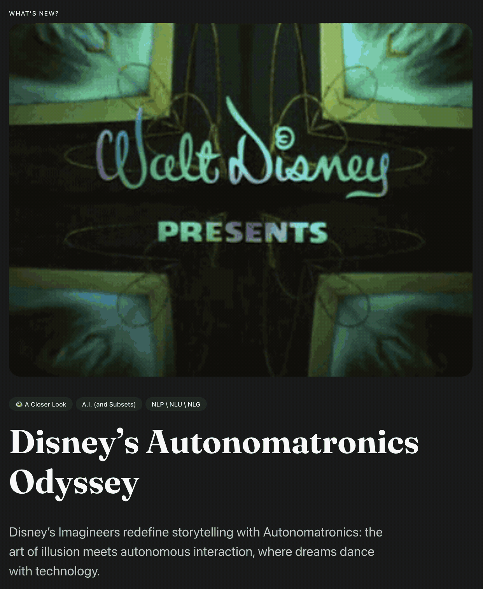

:: Now begins a story...
May I present to you, a finely curated section of a fine collection of the wonderful web we weave with a weekly roundup of bits and pieces from the far corners of the super information highway that I like to call — Token Wisdom ✨


“Seek and see all the marvels around you. You will get tired of looking at yourself alone, and that fatigue will make you deaf and blind to everything else."

A curated wisdom of consumed knowledge and token allocation.
↳ March 24th 🧿 March 30th, 2024
📖 Table of Contents

Welcome to Token Wisdom!
Where we learn about tomorrow, today.
Welcome to the pulse of innovation—a nexus of technology, culture, business, and creativity. This issue of Token Wisdom presents a tapestry of transformation where the digital and physical realms intertwine.
🎉 Newest / Latest
#SearchPersonalization: Google's Search Labs melds personalization with expansive digital horizons.
#CinemaMagicvsStreaming: The timeless duel between cinema's enchantment and the convenience of streaming unfolds.
#NostalgiaTech: Meta Glasses and Apple's Spatial Audio converge to reinvent how we relive cherished memories.
And more... Discover All Newest / Latest Stories
👁️ A Closer Look
Disney’s Autonomatronics Odyssey
Crafting Characters and Contemplating Consequence
📺 Time Well Spent
#MBAcontroversy: The efficacy of MBA expertise in startups is questioned, challenging the balance between formal business education and entrepreneurial agility.
#SportswearGiants: Discover the dramatic inception of Adidas and Puma from a brotherly rift to iconic global brands that redefined sneakers and sports marketing.
#CreativeExpression: The legacy of Jamiroquai's 'Virtual Insanity' is celebrated for its prescient vision on technology's impact, setting a benchmark in musical artistry.
And more... Explore Thought-Provoking Videos
In this complex interplay of technology and values, we recognize the dual nature of our times: a life balanced between physical interactions and online identities, where creating digital personas reflects our moral compass.
Delight in the adventures ahead—savvy disruptions, digital dialogues, and the rich woven stories that propel us forward—pursuing innovation.
🎖️ A highly curated collection of humanly consumed knowledge.
🎉 Newest / Latest
100% Human Curated and Consumed Content

This edition is a kaleidoscope of future-focused narratives, each vignette casting light on the symbiotic dance between humanity and the ever-evolving partner of technology, offering a glimpse into a tomorrow where augmented realities and collective synapses illuminate the path of progress.
#CinemaResilience: Despite the surge in digital streaming, cinemas maintain their charm through unique, collective experiences.
#TechNostalgia: Meta Glasses and Apple Spatial Video are revamping how we revisit and emotionally connect with our past experiences.
#ChanelDigital: Chanel is pioneering the intersection of luxury fashion and digital innovation with its bold venture into the metaverse.
#MusicalMinds: Studies reveal the impact of music on cognitive performance, suggesting melodies could enhance brainpower and concentration.
#NeuroHarmony: Research into brainwave synchronization suggests a link between neural harmony and improved social interaction and teamwork.
#VirtualGamingFrontier: Wilder World, in collaboration with Epic Games, is forging a new path in immersive gaming with a focus on creator revenues.
#AITalentDilemma: The movement of AI PhD graduates towards jobs in big tech companies poses questions about the future of open innovation.
#ArtificialCreativity: OpenAI's first Artist in Residence exemplifies the evolving synergy between AI and human artistic expression.
#AvatarInfluence: Online avatars can shape our morals and ethics, highlighting the significance of our digital identities.

The Full Breakdown - Top 10 of the Week
100% Human Curated Collection of Content
👁️ A Closer Look
Attempts to explore a subject and share my thoughts.



A Closer Look: Explorations in Technology
Weekly essay in the areas of blockchain, artificial intelligence, extended reality, quantum computing, and all the bits and pieces.


📺 Time Well Spent
Top Ten of the Time I Spend

Explore the competitive world of sports brands, vintage computing, artificial intelligence, and animation art. Explore the impact of sketch comedy, startup culture, and the profound messages in music videos. This journey isn't just about retelling history—it's about living it.
#RetroComputing: Dive into the vibrant 2024 Amiga demo scene, where nostalgia meets modern programming, and early computer graphics continue to inspire innovation.
#AIascent2024: Sequoia Capital's summit provides a compelling glimpse into AI's transformative role and its ethical, societal, and industrial future impact.
#DigitalRealism: Meshcapade revolutionizes digital animation, blending advanced AI with human artistry to craft strikingly realistic and efficient motion capture technology.
#ComedyRevolution: "Chappelle's Show" is dissected for its pioneering role in television comedy, weaving together satire and social commentary that still resonates today.
#MBAcontroversy: The efficacy of MBA expertise in startups is questioned, challenging the balance between formal business education and entrepreneurial agility.
#SethRogenInsights: Gain insights into Seth Rogen's entertainment career through key moments that shaped his creative trajectory and influence in the industry.
#AIfuture: The documentary "A.I. Revolution" walks us through AI's evolution, its current integration into our lives, and the profound changes it portends for the future.
#FutureOfVisualization: BeamO's multiscope merges multiple visual technologies into one innovative device, revolutionizing professional and recreational observation.
#CreativeExpression: The legacy of Jamiroquai's 'Virtual Insanity' is celebrated for its prescient vision on technology's impact, setting a benchmark in musical artistry.
If you watch these ten videos, statistics have proven your IQ will go up, like, 2 points or something like that. I saw it on Perplexity.*

For a Full Breakdown of Time Well Spent
A weekly top ten list of YouTube videos that caught my attention.

✨Token Wisdom
Knowledge Transmuted
As we conclude this issue of Token Wisdom, let's reflect on our active role in shaping the digital age. Our insights and creations ripple through society, reflecting our collective ambition. We shape technology with every action, leaving digital imprints that reveal much about us, like Cinderella's glass slipper.
These stories and contributions go beyond superficial ripples; they have the power to elevate or upend. Looking ahead, it's essential to contemplate the ramifications of innovation. Careless creation is like a ship without a rudder, drifting aimlessly. As we innovate, we must ensure that we enhance rather than replace the humanity at the core of our experiences.
Let this issue of Token Wisdom illuminate the path forward, showcasing breakthroughs while echoing historical wisdom. History speaks to us, not as a repeating record but as a guide that's sometimes discordant, yet often harmonious. As we embrace progress, let's also heed the lessons of the past, teaching us humility and resilience.
We can distill the essence of our experiences and knowledge in what Daniel Alighieri shares:
"The wisest are the most annoyed at the loss of time."
Let us take Dante's advice to heart and live each moment with purpose, whether we're diligently focused or enjoying spontaneous connections. As this edition concludes, we invite you, our insightful readers, to join us again next time, with more curiosity and a fresh perspective, ready to find value in both our successes and our setbacks.
Until we meet again, may you skillfully balance your online and offline experiences. Hold onto boldness and contemplation as we each contribute to the larger human journey. Until our next meeting, keep fostering your desire for knowledge and your bravery to explore new frontiers. There is always time, until there is not.
⏰
Embrace the pursuit of knowledge, for it's in learning that we forge the tools to shape a better tomorrow. Sign up for more Token Wisdom and carry the torch of foresight into the fathomless domains of innovation and beyond.
Until next time: stay smart, stay kind, and definitely stay weird!
Become a Token Wisdom subscriber—Illuminate your inbox with the light of knowledge. ✨

Thank you for cruising by the Cult of Innovation
We’re making some Stone Soup here and if you enjoyed this amuse-bouche of news compilations in bite-sized morsels, please share with your friends and help feed a community. Mmmm. #nomnom.